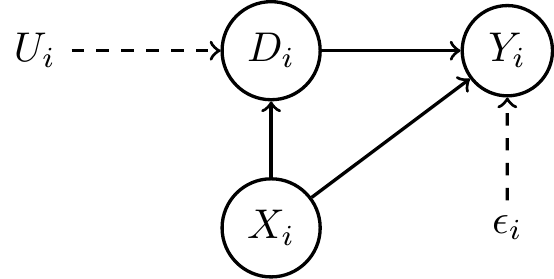

Identification
10/31/22
Reading
- Required: Song (2021) chapter 4 (which is the basis for these slides)
- Recommended: Lewbel (2019)
- Supplementary: Matzkin (2013), Molinari (2020) , Imbens (2020)
\[ \def\Er{{\mathrm{E}}} \def\cov{{\mathrm{Cov}}} \def\var{{\mathrm{Var}}} \def\R{{\mathbb{R}}} \]
Identification
Definition
Let \(X\) be an observed random vector with distribution \(P_X\). Let \(\mathcal{P}\) be aprobability model — a collection of probabilities such that \(P_X \in \mathcal{P}\). Then \(\theta_0 \in \R^k\) is identified in \(\mathcal{P}\) if there exists a known \(\psi: \mathcal{P} \to \R^k\) s.t.
\[ \theta_0 = \psi(P_X) \]
Examples
Example: Descriptive Statistics
\(\theta_0 =\) mean of \(X\), then \(\theta_0\) is identified by \[ \psi_\mu(P) = \int x dP(x) \] in \(\mathcal{P} = \{P : \int x dP(x) < \infty \}\)
Generally, descriptive statistics identified in a broad probability model with just regularity restrictions to ensure the statistics exist
Example: Linear Model
\[ Y = \alpha + \beta X + \epsilon \]
\(\mathcal{P} = \{P_{X,Y}:\) \(Y=\alpha + \beta X + \epsilon\),
\(| \mathrm{Cov}(X,Y) | < \infty\), \(0 < \mathrm{Var}(X) < \infty\)
\(\mathrm{Cov}(X, \epsilon) = 0\) \(\}\)
\(\beta\) identified as
\[ \beta = \frac{\int (x - \Er X) (y - \Er Y ) dP_{X,Y}(x,y)} {\int (x - \Er X)^2 dP_{X}(x)} = \frac{ \cov(X,Y) }{ \var(X) } \]
- Identification requires:
- Usually innocuous regularity conditions
- Substantive exogeneity restriction
- Evaluating plausibility of exogeneity restrictions requires a priori knowledge of data context and related economic theory
Example: Multiple Regression
\[ Y = X'\beta + \epsilon \]
- \(\mathcal{P} = \{P: \Er X \epsilon = 0, \Er X X' \text{ invertible} \}\)
Example: Binary Choice
\[ Y = 1\{ \beta_0 + \beta_1 X > u \} \]
- \(\mathcal{P} = \{P: u \sim N(0,1), 0< \var(X) < \infty \}\)
- Is \(u \sim N(0,1)\) innocuous?
Example: Potential Outcomes
Data:
- Treatment \(D_i\)
- Potential outcomes \((Y_{i,0}, Y_{i,1})\), observed outcome \(Y_i = D_i Y_{i,1} + (1-D_i) Y_{i,0}\)
- Covarites \(X_i\)
Parameter: \(\theta_0 = \Er[Y_{i,1} - Y_{i,0}] =\) average treatment effect
Assume:
- Unconfoundedness: \((Y_{i,0}, Y_{i,1})\) conditionally independent of \(D_i\) given \(X_i\)
- Overlap: \(\epsilon < P(D=1|X=x) < 1-\epsilon\) for some \(\epsilon > 0\) and all \(x\)
Causal Diagrams
Causal Diagrams
- Originate with Wright around 1920, e.g. Wright (1934)
- Recently advocated by Pearl, e.g. Pearl (2015), Pearl and Mackenzie (2018)
- Recommended introduction Imbens (2020)
- Sometimes useful expository tool for explaining identifying restriction, but should not be your only or primary approach
- e.g. Chernozhukov, Kasahara, and Schrimpf (2021)
Example: Regression

Example: Potential Outcomes
Generalized and/or Descriptive Intrepretation of Population Estimator
- Analyze familiar estimator under more general assumptions
- Understand bias when exogeneity assumptions fail
- Sometimes give more general interpretation of existing estimator
Example: Regression
- In linear model \(Y_i = X_i'\beta + \epsilon_i\), if just assume \(\Er X X'\) invertible,
- Population regression \[ \begin{align*} \theta = & \Er[ X X']^{-1} \Er[ X Y] \\ = & \Er[X X']^{-1} \Er[X (X' \beta + \epsilon)] \\ = & \beta + \Er[X X']^{-1} \Er[X\epsilon] \end{align*} \]
Example: Regression
- If relevant moments exist (no linear model required) population regression solves \[ \Er[ X X']^{-1} \Er[ X Y] \in \mathrm{arg}\min_b \Er[ (X'b - \Er[Y|X])^2 ] \]
Example: Potential Outcomes
- Matching initially studied with a linear regression model, e.g. Cochran (1953) \[ Y_i = \alpha D_i + X_i' \beta + \epsilon_i \]
- Implies constant treatment effect \(Y_{i,1} - Y_{i,0} = \alpha\)
Non-constructive Identification
Non-constructive Identification
- Identification sometimes defined without explicit mapping from data to parameters, e.g. Hsiao (1983), Matzkin (2007)
Definition: Observationally Equivalent
Let \(\mathcal{P} = \{ P(\cdot; s) : s \in S \}\), two structures \(s\) and \(\tilde{s}\) in \(S\) are observationally equivalent if they imply the same distribution for the observed data, i.e. \[ P(B;s) = P(B; \tilde{s}) \] for all \(B \in \sigma(X)\).
Let \(\lambda: S \to \R^k\), \(\theta\) is observationally equivalent to \(\tilde{\theta}\) if \(\exists s, \tilde{s} \in S\) that are observationally equivalent and \(\theta = \lambda(s)\) and \(\tilde{\theta} = \lambda(\tilde{s})\)
- Let \(\Gamma(\theta, S) = \{P(\dot; s) | s \in S, \theta = \lambda(s) \}\), then \(\theta\) and \(\tilde{\theta}\) are observationally equivalent iff \(\Gamma(\theta,S) \cap \Gamma(\tilde{\theta}, S) \neq \emptyset\)
Non-constructive Identification
Definition: (Non-Constructive) Identification
\(s_0 \in S\) is identified if there is no \(s\) that is observationally equivalent to \(s_0\)
\(\theta_0\) is identified (in \(S\)) if there is no observationally equivalent \(\theta \neq \theta_0\)
- i.e. \(\Gamma(\theta_0, S) \cap \Gamma(\theta, S) = \emptyset\) \(\forall \theta \neq \theta_0\)
- Compared to constructive definition with \(\theta_0 = \psi(P)\):
- Less clear how to use identification to estimate
- Easier to show non-identification
Example: Multiple Regression
\[ Y = \beta_0 + \beta_1 X_1 + \beta_2 X_2 + \epsilon \]
\(X = [X_1\, X_2]'\), if rank \(\Er X X' = 1\), then \(\beta_1, \beta_2\) is observationally equivalent to any \(\tilde{\beta}_1, \tilde{\beta}_2\) s.t. \[ \tilde{\beta}_1 + \tilde{\beta}_2 = \beta_1 + \beta_2 \frac{\cov(X_1, X_2)}{\var(X_2)} \]
\(\theta_0 = \lambda( \beta ) = \beta_1 + \beta_2\) is identified if rank \(\Er X X' \geq 1\)
Example: Random Coefficients Logit
\(Y_i = 1\{\beta_0 + \beta_i X_i \geq U_i \}\)
- \(U\) independent \(X_i,\beta_i\),
- \(\beta_i\) indepedent \(X_i\),
- \(F_u(z) = \frac{e^z}{1+e^z}\)
\(\Er[Y|X] = \int \frac{e^{\beta_0 + \beta X_i}} {1+e^{\beta_0 + \beta X_i}} dF_\beta(\beta)\)
Non-constructive and constructive identification of \(F_\beta\) in Fox et al. (2012)